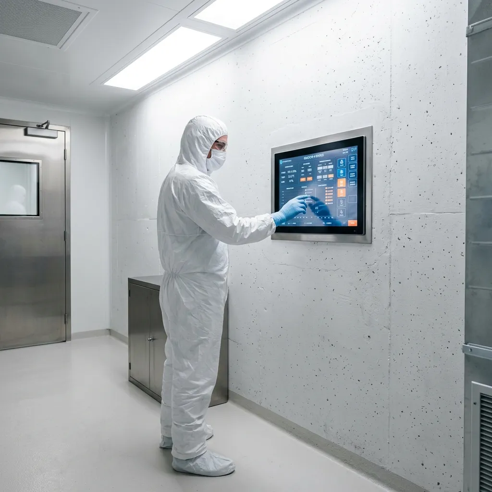

Aseptic Cellars
Aseptic Cellars
Aseptic Bio-Acoustic Protein Desiccation.
We eliminate the biological unpredictability of traditional dry-aging through medical-grade ultrasonic cavitation and ISO 7 sterile environments.
Traditional culinary dry-aging is a compromised process, reliant on uncontrolled fungal growth and airborne environmental bacteria to break down muscle tissue. Aseptic Cellars approaches protein maturation as a clinical science. Operating from a retrofitted pharmaceutical laboratory in Cambridge, we use high-frequency acoustic cavitation to systematically desiccate premium proteins in a total vacuum. The result is molecularly dense, sterile, and profoundly concentrated tissue, achieving maximum enzymatic breakdown with zero risk of biological contamination.
Initiate Audit
Acoustic Desiccation Mechanics
The fundamental flaw in standard atmospheric aging is the reliance on surface mould to regulate internal moisture. Our methodology bypasses fungal reliance entirely. Raw proteins are introduced to custom-engineered, medical-grade stainless steel vacuum chambers. Once atmospheric pressure is neutralized, we bombard the tissue with targeted low-frequency ultrasonic waves (typically between 20 kHz and 40 kHz).
This acoustic cavitation creates micro-fissures within the muscle fibre, forcing internal moisture outward without requiring a porous crust. UV-C lighting bathes the chamber constantly, neutralizing any trace biological contaminants before they can multiply. Over a standard 120-day cycle, the protein loses precisely 42% of its water weight. Because there is no oxidized exterior bark to trim away, our clients achieve a 100% usable yield of sterile, concentrated tissue, characterized by an unprecedented enzymatic purity that fungal aging cannot safely replicate.

The Cleanroom Standard
The ISO 7 cleanroom protocols at our Cambridge facility represent a paradigm shift in protein desiccation, achieving total environmental control. Traditional aging chambers are highly susceptible to airborne contaminants and erratic microbial blooming, requiring constant physical intervention. In contrast, our medical-grade laboratory maintains a strict ISO 7 (Class 10,000) specification. High-Efficiency Particulate Air (HEPA) filtration systems continuously cycle the atmospheric volume, ensuring less than 352,000 particles per cubic metre of air.
To prevent any external biological transfer, the primary processing zone operates under constant positive air pressure. Every laboratory technician is mandated to wear full non-shedding Tyvek suits, sterile nitrile gloves, and comprehensive respiratory masking before entering the active desiccation suites. By eliminating the variable of airborne pathogens entirely, we guarantee that the final tissue is completely uncompromised, allowing the acoustic cavitation to proceed in a state of absolute sterility.
Review Facility ParametersCulinary Viability
Avant-garde gastronomy directors and Michelin-starred executive chefs require a baseline of absolute consistency that biological aging cannot provide. The culinary viability of ultrasonically desiccated protein lies in its unprecedented yield and profound flavour purity. Traditional fungal maturation necessitates the aggressive trimming of the oxidized exterior bark, frequently resulting in a yield loss exceeding thirty percent.
Our bio-secure methodology circumvents this completely, delivering a 0% trim waste margin. The resulting isolate is molecularly dense, offering a profoundly concentrated sensory profile devoid of the typical unrefined notes associated with mould cultures. Instead, chefs receive a sterile, intensely umami-rich tissue that performs predictably under extreme heat application. This precision allows culinary scientists to calculate portionings and menu costings with zero variance, elevating the raw material from a compromised product to a highly regulated, medical-grade ingredient.
View Protein Inventory